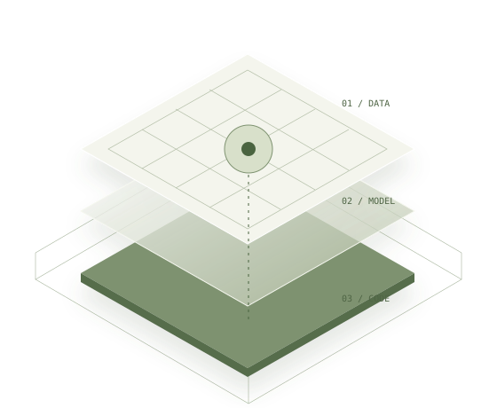

모델과 데이터를 코드로 다루기
인공지능학과에 입학한 뒤, 모델과 데이터를 코드로 직접 다뤄보고 싶어 1학년 2학기에 KHUDA Computer Vision 트랙에 참여했습니다.
DEVELOPMENT PORTFOLIO / 2026
안녕하세요, 신정안입니다.
새로운 분야를 배우고 직접 해보는 걸 좋아합니다.구현하는 일부터 문제를 구체화하고 팀과 함께 만드는 일까지, 다양한 경험 속에서 제 관심과 방향을 찾아가고 있습니다.
현재는 AI Engineering과 Research에 관심이 있습니다.
프로젝트 보기 ↘
BACKGROUND / HOW I GOT HERE
2024.03 입대 — 2025.09 전역
2026.03 복학
인공지능학과에 입학한 뒤, 모델과 데이터를 코드로 직접 다뤄보고 싶어 1학년 2학기에 KHUDA Computer Vision 트랙에 참여했습니다.
CV 결과를 눈으로 확인하는 일이 재미있어, 다른 사람에게 보여줄 화면도 만들고 싶었습니다. UMC에서 웹을 배우고 React Native를 독학했습니다.
복학 후 KHUDA AI Engineering 트랙을 이수했습니다. 현재는 AI 기능을 앱에 연결하는 작업과 3D 장면의 특징 압축 실험을 하고 있습니다.
01 / SELECTED WORK
다룬 문제와 맡은 일,
구현 내용과 결과를 정리했습니다.
방을 스캔하고 가구 배치를 편집하는 팀 프로젝트입니다. “책상을 더 크게” 같은 말로 배치를 바꾸되, 다른 가구와 겹치거나 방을 벗어나지 않는지 확인합니다.
맡은 일자연어 요청 해석과 배치 수정·검증을 연결하는 작업에 참여
팀 프로젝트 · SW부문 우수상·인기상더치페이 후 내가 실제로 부담한 금액을 정리하는 가계부 앱입니다. 결제·입금 내역을 정산 관계로 연결하고, 사용자가 계산 근거를 확인·수정하도록 설계했습니다.
맡은 일제품 방향·정산 계산 기준 설계 · 파일 기반 앱 개발
개발 중 · 파일 기반 앱·로컬 분석 검증대화에서 여행 조건을 기억하고 일정 변경을 제안하는 웹·iPhone 프로토타입입니다. 평소 선호와 오늘만 적용할 조건을 구분해, 끝난 조건이 다음 제안에 남지 않도록 다룹니다.
맡은 일팀 공통 평가 기준 정리 · 개인 웹·iPhone 프로토타입 구현
개발·검증 중 · 웹·iPhone 프로토타입평소에는 조용한 식당
오늘 점심에는 활기찬 곳
점심 시간에만 적용다시, 평소의 선호로
여러 시점의 이미지로 3D 장면을 만드는 MVSplat의 중간 데이터를 압축하는 실험입니다. 데이터를 나눠 받을 때 복원 화질·전송량·처리 시간·메모리를 비교합니다.
맡은 일기존 모델에 압축 경로 연결 · 복원 검증·비교 실험
실험 진행 중 · 단계별 복원 검증16채널씩 추가 · 패킷 수신량에 따라 13단계 복원
02 / OTHER WORK
화면 구현과 API 연동,
프론트엔드·AI 작업에 참여했습니다.
2023 하반기 — 2024 초
UMC 팀에서 프론트엔드를 맡아 마이페이지와 레크리에이션 검색 목록을 구현했습니다. 즐겨찾기·사용자 정보 API를 연결하고, 페이지 전환과 검색 결과가 없을 때의 화면을 처리했습니다.
React·JavaScript·styled-components·React Router·Axios를 사용했습니다. 제가 작성한 PR에서 항목별 즐겨찾기 상태와 페이지·검색 결과 처리를 확인할 수 있습니다.
2023 / 2학년 2학기
프론트엔드와 AI 분야를 전반적으로 지원했습니다. KHUTHON 우수상 이후 같은 아이디어를 발전시켜 AI+대학교육 아이디어톤 최우수상을 받았습니다.
2023 / 2학년 2학기
03 / WORKING TOGETHER
기존 인트라넷을 React·Spring 기반으로 전환하는 프로젝트에서 전체 기획과 프론트엔드·백엔드 업무 조율을 맡았습니다.
제품과 비교 제품군을 분석하고 Excel·PPT 자료를 작성하며 PM 업무를 배웠습니다.
04 / RECOGNITION
팀 프로젝트 수상과
가계부 특허 등록 내역입니다.
AI·SW중심대학 디지털 경진대회 / RoomFit
ICAC 2026
AI+대학교육 아이디어톤 / KhuT 아이디어 발전
KHUTHON / KhuT
경희대학교 SW페스티벌 / Star Detector
이수한 활동 KHUDA Computer Vision · UMC Frontend(Web) · KHUDA AI Engineering · LG Aimers 9기 수료
05 / CURRENT INTERESTS
프로젝트에서 남은 질문과
새로 공부하고 싶은 주제입니다.
RAG를 공부하며 문서 검색·재순위화와 검색 품질 평가를 다뤘습니다. 필요한 근거를 잘 찾는지, 답변이 그 근거에 맞는지 확인할 수 있는 기능을 만들고 싶습니다.
여러 에이전트가 역할을 나누고 실행 결과에 따라 협업 방식을 바꾸는 과정에 관심이 있습니다. 문제에 따라 추론에 쓸 계산량을 어떻게 배분할지도 더 공부하고 싶습니다.